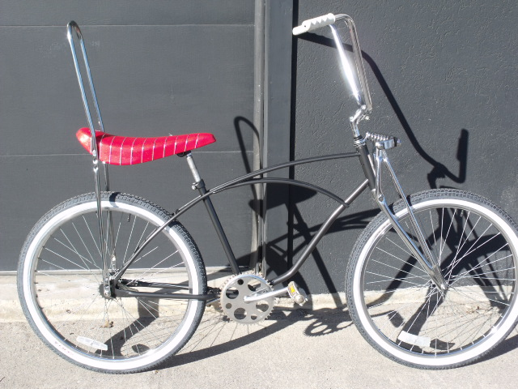

When a 16-year-old is excited to receive her first stack of business cards, it is a good indicator that
she is destined for entrepreneurship.
Doreen Sobioch was proud of the day she got her first stack of Doreen's Bicycle Shop cards because
it made the business she started at age 11 official. Sobioch, 44, opened the second generation of her
bicycle shop in April, called Days Roll By. The shop, [no longer at] 1905 W. Eight St., sells reconditioned
bikes, accessories such as clothing and used bicycle parts. She also does repairs and tune-ups.
Sobioch's interest in bicycles started when she growing up in a "tinkering" family outside of Chicago. Her
father, a tool and die machinist and maintenance engineer, was adept at fixing anything that broke down at the candy factory where he worked,
Sobioch said. He tutored his mechanically inclined daughter on how to repair bikes.
When she became good enough to work independently, she launched her business out of her parents' garage. They made her pay a
modest rent. During the winter, she would fix up bicycles, and by the time the snow finally melted in the spring, she would have a garage
full of bicycles ready for sale.
"I'd have about 35 bicycles ready to go on my driveway," Sobioch said. Through her bicycle shop, she saved enough money to pay for
college where she studied business marketing and international relations.
After college, she pursued other careers besides bicycle repair, but it was something she has kept up as a hobby. In April, Sobioch
opened her own shop again. Her career as a residential appraiser gives her the schedule flexibility to do both jobs. She even gets some
of the bicycle inventory from home sales on bank-owned properties that she appraises.
With the new store, she has been able to free up some space in her garage, which was full of bicycles.
Sobioch's bicycles.
Even with her love of bicycles, Sobioch has never owned a new one. This is partly because she loves personalizing and fixing them up
and because of her parents' frugal influence.
They were German immigrants who lived through World War II in Germany, who taught their three children to save and reuse everything.
Sobioch carries on that legacy and does whatever she can to keep bicycles out of the landfill and get them back on the road, Sobioch said.
A trend in her bicycle shop is making hybrids that use different components from different bikes to create easy-to-use models, like cruisers.
"People want something that's simple to ride and simple to maintain," she said.
Sobioch's own bicycle is a hybrid.
She rides a Schwinn mountain bike frame with mountain bike wheels and city-slick tires. It is hand-painted a metallic purple, one of her
favorite colors, complete with Schwinn decals.
While she takes pleasure in fixing up many styles of bikes, she got to repair one of the most interesting models a few months ago. It
was a 1946 Raleigh bike from England with a "very artistic swoop frame," Sobioch said.
Fred Snyder of Fort Collins found the bicycle for his wife at a garage sale and thought it was a reproduction. He didn't know it was from the
1940's and was surprised by all the information Sobioch found on it and how "into it" she was.
"This woman knows her stuff," Snyder said. "I was glad I took it to her." Sobioch reworked the bicycle after researching it online and is
waiting to find just the right chrome fenders.
When it was in her shop "everyone wanted it," said Sobioch, who had to turn down many potential buyers.